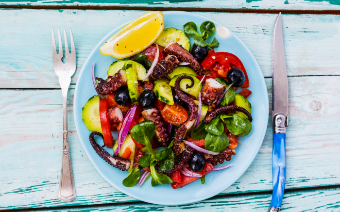
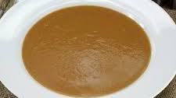
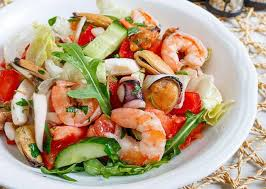
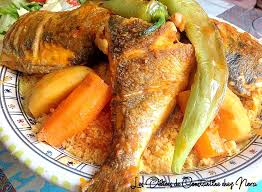
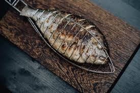
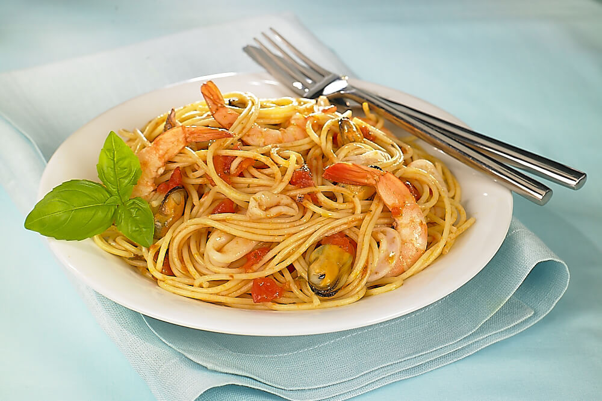
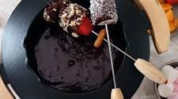
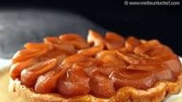
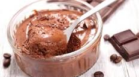

Plat d'Entrée
-
Salade de poulpe à la tunisienne

Poulpe, oignon, tomates, persil, huile d'olive, citron, sel, poivre, radis et olive noire.
-
Soupe de poisson

Soupe du Diplodus annularis.
-
Salade aux fruits de mer

Crevettes décortiquées, moules décortiquées, calamars en morceaux, tomates, concombre, laitue, gousse d'ail, huile d'olive, citrons, sel et poivre.
Main Courses
-
Couscous au poisson

Couscous tunisien avec de la dorade.
-
Dorade grillée

Dorade grillée servie avec des frites et du riz blanc.
-
Spaghetti fruits de mer

Pâtes fraîches avec moules, crevettes cuites décortiquées, huile d'olive, tomates concassées, soupe de persil haché, quelques feuilles de basilic frais, sel et poivre noir.
Desserts
-
Fondue au chocolat

Assortiment de fruits et de guimauves servis avec une riche fondue au chocolat.
-
Tarte Tatin

Tarte aux pommes caramélisées servie tiède avec de la crème fraîche.
-
Mousse au chocolat

Mousse légère et aérienne au chocolat noir, garnie de crème fouettée.